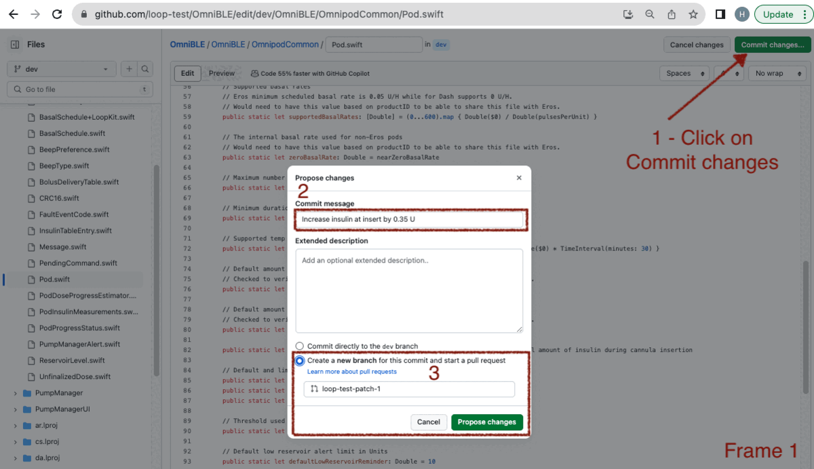
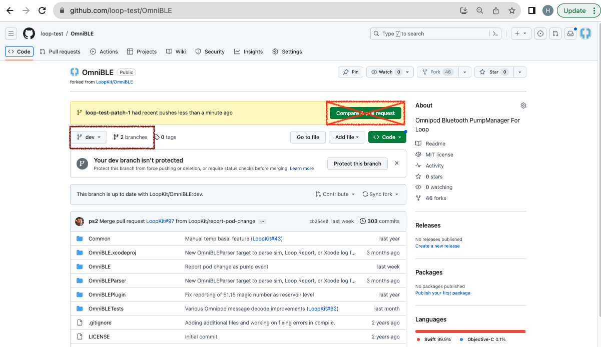

Customize using Browser
Hot Topics¶
Pro Tip
The method on this page allows you to create a set of personalized customizations that you can use in addition to the Loop and Learn: Prepared Customizations. You can use (and re-use) your customizations with either Browser Build or Mac-Xcode builds so you don't have to repeat the customization with every update.
- If you are building with Mac-Xcode method, you can use the same lines prepared for Build with Browser method and simply paste them in your terminal at the LoopWorkspace folder to customize your code
- You can often use the same customization for several releases
- If a customization that you prepared for an older release says "does not apply" when you use it, you'll need to prepare a new one
Modules vs Submodule
This page has instructions to set up your own copy for the Modules, otherwise known as submodules, associated with LoopWorkspace that are needed for a selected customization.
Each Module has its own GitHub repository and you will be working with your copy of that Module at https://github.com/username/Module, where username is your username.
Copy vs Fork
We use the word "copy" on this page but when you look at GitHub, you will see the word "Fork".
What is a SHA-1?
SHA-1 means Secure Hash Algorithm 1; which is used to generate an alphanumeric code.
Each time you save a change to your GitHub repository, a unique SHA-1 is created. That identifier is used to tell GitHub a specific change that you want applied. These work for any compatible copy taken from the original GitHub repository.
Do Not Make a Pull Request to Original Copy¶
Ignore Compare & pull request Prompts
Please do not click on boxes that GitHub might show you that ask if you want to Compare & pull request.
This would be an attempt to merge changes from your copy back to the original version that everyone uses. These changes are for you only. Ignore those prompts.
Overview¶
Time Estimate
- About half an hour to an hour per Module
- Typically 1 or 2 Modules
- Ten minutes to add patch lines to your build_loop.yml file
- One minute to start the build
- An hour before the build shows up on your phone in TestFlight
Summary
- Prepare Customization (One Time):
- Once you have prepared a given customization, you can use it again with each update
- If there is an update (new release) and the customization is no longer valid - you will get a clear error message
- Just follow the steps on this page again to replace the customization that did not work
- If there is an update (new release) and the customization applies with no errors, then you do NOT need to create an update
- It is a good idea to test each customization as soon as you install the new build on your phone
- LoopDocs: Decide on Modules to modify using the LoopDocs: Code Customization page
- You only need to create your own customization if what you want is not provided at Loop and Learn: Customization List
- GitHub (each Module):
- Copy Module (if needed) - this is your copy where you will make changes
- Sync the Module (if needed)
- Make the desired modification(s) using the pencil tool
- Save your changes
- Prepare lines needed for each customization and save
- GitHub (LoopWorkspace) - using your copy where you will make changes
- You will use the pencil tool to edit build_loop.yml
- Add customization lines to the file
- Save your changes
- Action 4: Build Loop
- Phone: Install with TestFlight
FAQs
- Do I need a Mac computer? No. This can be done on any browser.
- Should I build without customizations first? Yes. Make sure the build process works without customizations. You don't need to install the build on your phone, just make sure it builds without errors before you start modifying.
How to Customize Build with Browser¶
You do this using any browser on a computer or laptop. (Phone is not recommended - screen is too small.)
There is some background information at the bottom of this page starting at LoopWorkspace if you want to know what you are doing. Otherwise, just follow the steps like a cookbook.
Decide Which Modules You Want to Modify¶
Decide which LoopDocs: Code Customization changes you want to make. Each customization lists a Module name.
- DASH Pods: Use OmniBLE
- Eros Pods: Use OmniKit
- Other Modules are Loop and LoopKit
- Do not get confused later: LoopKit is both a username and a Module name
- Refer to the Module Table when directed
Outline of What Happens in the Module¶
Review Only
Review this section so you know what to expect. The actual steps will come later, starting with Create your Copy for Selected Module or Edit Module in Browser.
In the next sections, the exact process for making changes will be documented. But the steps may feel confusing. This section tries to explain what you will be doing once you start editing with a given Module.
- Make a copy if you don't have one
- Change the line(s) of code desired for your customization(s)
- Save the change(s) using descriptive comments
- Repeat until done with this Module
Later, you will use information from your copy to create your customizations. (Suggestion - use same file as your Secrets, or at least keep the customization file in the same folder). Details are found at the Prepare the Customizations section.
Error Committing Your Changes¶
What should you do if you see the message:
There was an error committing your changes: File could not be edited
This is fairly rare, but it can happen. A user got this error when editing a file using GitHub:

The solution was to make sure the email address in their GitHub profile was correct. See GitHub Discussions for more information.
Create your Copy for Selected Module¶
Choose your link:
- New Copy: if you do not have a copy of this Module
- Code Updates: if you are returning after a new release
- Existing Copy for Module: if you have a copy but need guidance on whether it is the right copy
Code Updates¶
New Release
If you have previously used this process for a prior release, use the same Modules you already copied.
You can often reuse customizations that you created earlier even with a new release. Attempt to use your existing patches before creating new ones.
If a customization did not work, then
- Go to your copy of each Module
- Sync that Module to get the most recent version
Skip ahead to Edit Module in Browser.
New Copy¶
If you want a modification that uses a particular Module, you must make a copy of that module to your account in GitHub. You will repeat the Copy and Modify steps for each module.
- Log into your GitHub account
- Right click (or control click) on the URL in the Module Table
- This opens a new browser tab at the URL of the module you need to copy
- Click on Fork, your copy will show up in the browser
Module Table¶
This table lists all the modules referred to on the Code Customization page linked above:
| Module | Copy From |
|---|---|
| Loop | https://github.com/LoopKit/Loop |
| LoopKit | https://github.com/LoopKit/LoopKit |
| OmniBLE (for DASH) | https://github.com/LoopKit/OmniBLE |
| OmniKit (for Eros) | https://github.com/LoopKit/OmniKit |
Remember - you can only have a single copy of a given GitHub repository. If you already have a copy, you don't need another one; but it must be a linked to the URL listed the Module Table.
I already have a copy
Go to Existing Copy for Module and follow the directions.
Default Table¶
When you "fork a repository" (make a copy), the default branch is the one that should be copied.
| username/Repository | Default |
|---|---|
| LoopKit/Loop | dev |
| LoopKit/LoopKit | dev |
| LoopKit/OmniBLE | dev |
| LoopKit/OmniKit | main |
Edit Module in Browser¶
Open your browser to your https://github.com/username/Module URL. Be sure to sync your copy if it shows it is behind the LoopKit repository.
Navigate to the file you need to modify (using the instructions to find the lines from the LoopDocs: Customization Page)
Pro Tip
Look at the files you want to change - if more than one change is desired for a single file - do them at the same time.
This section provides the steps to make a single customization for the Module. If you need more than one, just repeat the process and make additional ""patch" branches.
Example GIF¶
The GIF showing the creation of one customization is shown below. Please review the 4 frames of the GIF, read the detailed instructions below and then review the GIF again. In case you are concerned by the "Pull Request shown here; this is to your own copy, not back to the original.

Detailed Instructions¶
You will be using the "pencil" tool in the browser display for your copy.
Are there detailed instructions?
For more information about editing with GitHub:
The bullets below go with Frame 1 of the GIF above:
- Once you make the change to a given file, click on "Commit changes" (upper right)
- Click in the "Commit message" box and replace the default "Update filename" with a comment about what the customization does
- Click on the second option near the bottom "Create a new branch for this commit"
- Note: when you do the LoopWorkspace modifications, you will not choose this option
- Click on the "Propose changes" button
- As soon as you do this, a new "branch" is automatically created with a name like username-patch-#, where the number increments each time
The bullets below go with Frame 2 of the GIF above:
- You will be shown a screen where you create a pull request to your own copy (this does not go back to the original)
- First review the changes (shown at the bottom) and then click on the "Create pull request" button
Between Frame 2 and 3 of the GIF, your display will look similar to the graphic below:

You see there an opportunity to "Compare & pull request"
- Do not click on that
- This would be an attempt to merge changes from your copy back to the original
The branches selection is highlighted with a brown rectangle in the graphic above.
- You can use the drop-down menu or click on the word branches.
- Choose the branch you just created, i.e., username-patch-#.
Your screen should now look like Frame 3 of the GIF above:
- Click on the Clock icon to the right
Now your display should look like Frame 4 of the GIF above:
- The top line is the last thing saved (your customization)
- You need to record the very long alphanumeric number associated with this
- There is a copy icon to the right - click on it and save it in your text file along with a comment about the customization and record which module you used for the customization
For example:
# OmniBLE: Increase insulin at insert by 0.35 U
SHA-1 = 5e9f4f407ff5544663f496d2e3a5ed8aa4f32a68
Warning - that is not a valid SHA-1 for this change. Do not try to copy it and use it. You must make your own personalized changes.
Later on, you will create the actual command needed to insert into build_loop.yml so you can add this customization when your build the app.
Repeat this process until you've done all your customizations for this Module and then move on to the next Module.
Prepare the Customizations¶
Once you prepare the commands, then you will edit the build_loop.yml file of your copy of LoopWorkspace.
Ensure your copy is from LoopKit/LoopWorkspace
If your LoopWorkspace fork did not come from LoopKit/LoopWorkspace, then delete your existing copy and make a new one. See Already Have LoopWorkspace?.
- Do not use any other location to create your copy
- You may have used a different location for Loop 3.2.x
- This will not be supported for Loop 3.4
For each customization you want to include, create a pair of lines consisting of the comment (must start with a #) followed by the curl statement pointing to the SHA-1 that has the customization.
Save the customization lines in your text file for later use in the build_loop.yml file.
# Module: File: code customization description
curl https://github.com/username/Module/commit/SHA-1.patch | git apply -v --directory=Module
where:
curlmeans copy from URL- username is your GitHub username
- Module is where you made the customization (Module is in multiple places)
- SHA-1 is the full identifier for the desired change; there is a copy button to make this easy
- adding
.patchafter the SHA-1 informs GitHub to format that code change so it can be applied to your copy - the final
--directory=Moduleis critical to apply the customization to the correct Module
To view the exact code change associated with that patch, open a browser at the URL of https://github.com/username/Module/commit/SHA-1.
Update LoopWorkspace¶
The final step is to update your LoopWorkspace fork to apply these customizations by adding those customization lines into the build_loop.yml file.
Return to your GitHub fork for LoopWorkspace and make sure to sync it if needed.
- Find the folder .github/workflows and click on it
- Find the file build_loop.yml and click on it
- Click on the pencil (so you can edit this file)
- Locate line 31, which is just above the words:
# Patch Fastlane Match to not print tables
- Paste the contents of the block below so it comes before that section
# Customize Loop: Download and apply patches
- name: Customize Loop
run: |
# For each patch, edit comment line (keep the #) then update curl (and remove the #)
# Submodule Loop patches:
# Loop: Filename: customization details
#curl https://github.com/username/Loop/commit/SHA-1.patch | git apply -v --directory=Loop
# Submodule LoopKit patches:
# LoopKit: Filename: customization details
#curl https://github.com/username/LoopKit/commit/SHA-1.patch | git apply -v --directory=LoopKit
# Submodule xxxxx patches: Follow prototype above
Open the text file in which you saved the customization lines.
For a given submodule, paste the comment / curl command as indicated in the template above.
The indenting needs to match, so tab or (shift-tab) to line up the columns.
Once you are done with all the edits for build_loop.yml you will commit the changes to your copy directly.
- Once you have finished the edits for build_loop.yml
- Click on Commit changes (upper right)
- Click in the larger box below "Update build_loop.yml" and summarize the customizations you added
- Click on the option to "Commit directly to your branch"
- NOTE: for LoopWorkspace fork - commit directly to your default branch
- Click on Commit changes
- You can make as many changes to build_loop.yml in your fork as you want
When you are ready, it's time to build with your customizations.
Build with Customizations¶
At the top of the display, click on Actions.
- Click on Action 4: Build Loop
- Click on Run workflow on the right side
- Then click on the green Run Workflow button
Wait about 2 minutes before walking away to make sure there are no errors. If you get an error, then look for the first "did not apply" error message and fix the customization right before that line.
In about 1 hour, your customized app will be available for installation on your phone via TestFlight.
Special Cases¶
Existing Copy for Module¶
What if you already have a copy of one of the modules?
Your existing copy is from a username other than LoopKit
- If you know this is a copy you do not care about, you can delete the repository.
- If you care about this copy, you are probably experienced enough to know how to solve the issue.
Instructions to delete a repository are found at GitHub Docs
Once deleted, go to Create Your Copy for Selected Module.
Background Information¶
LoopWorkspace¶
The LoopWorkspace repository is the umbrella organization holding all the pieces needed to build the Loop app. It provides a list of pointers to a specific version for each of the Modules used in the workspace.
- commit: a specific change to the code identified by the SHA-1; the most recent one indicates the most recent version of the code
- workspace: a grouping of several repositories (Modules) into a complete package
- LoopWorkspace: includes a list of the specific SHA-1 for each Module needed for the app
You are telling GitHub to apply specific customizations when it builds your app for you. It makes a fresh copy of all the code needed, applies your specific customizations and then starts the build.